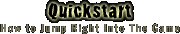

|
 Welcome to Grendel's Revenge, the game of monstrous roleplaying. If you've always wanted to play a vampire, an orc, or a troll — and wreak terrible vengeance on those pesky human adventurers who violate your lairs and kill your fellow clan members — this is your chance. The following quick start offers a thumbnail reference to starting out in Grendel's world. More detailed information is available elsewhere in this player's guide. Uthgol: The World of GrendelLong ago the world was at peace. Grendel's children burrowed in the ground and stalked across the earth and flew through the sky. They battled against each other and they lived together. They built lairs; they collected treasures. Grendel looked upon his children from faraway. All was well in the world. Playing Grendel's RevengeIn Grendel's Revenge you will take on the role of a monster, become part of monster society, and ward off the assaults of annoying Uglies. 1. Get into the GameTo start off, point your computer's web browser to: 2. Create a CharacterThe first time you enter Grendel's Revenge, the ActiveX? client will pop up for a moment, but then you'll be forwarded on to the "Monster Construction" page. This is where you begin to imagine your monstrous alterego. You'll be asked a number of questions. 3. Learn to CommunicateWhen you enter the game you will be at Grendel's Shrine, a place of serenity and peace. There will sometimes be other monsters that you can talk to here, using a quote:
4. Learn to MoveYou will eventually need to start moving about, to get out of Grendel's Shrine. The main exit is eastward. To move through portals such as doors or stairs, you must use the go verb:
- or -
Once you are out of the shrine and on the plains, you can walk about just using the appropriate direction:
5. Find a ClanAs a social monster, you should find a clan to join. By doing so you will be welcomed into a lair and gain the benefits of comraderie. The best way to find a clan is to wander Uthgol and talk with members of your caste. Eventually either one will point you to a lair, or you'll stumble upon one. 6. Learn to FightWhile journeying across Uthgol you will probably encounter uglies. Their only desire will be to mount your head above their hearth. If you're outclassed you should "retreat" and then move away using the directional functions as quickly as possible.
If you have other attacks, like firebreathing, you'll be able to use those as well. 7. Play Your RoleOnce you've found your clan you'll be able to start participating depending on your role. Builders will build, warriors will war, magicians will magic, leaders will lead, and shamans will ... sham. Talk with your other clan members to get pointers on how to best fulfill your potential. 8. Gain Grendel's FavorMonsters better themselves through Grendel's Favor. This is tracked by the bar at the left. You will gain favor points for killing uglies, but also for engaging in actions appropriate to your roll, such as building, healing, or leading. 9. Make Your Own WayIn the end you will have the opportunity to roleplay your monster and find your own way in Uthgol as you see fit. Remember that the main goal is to have fun. |